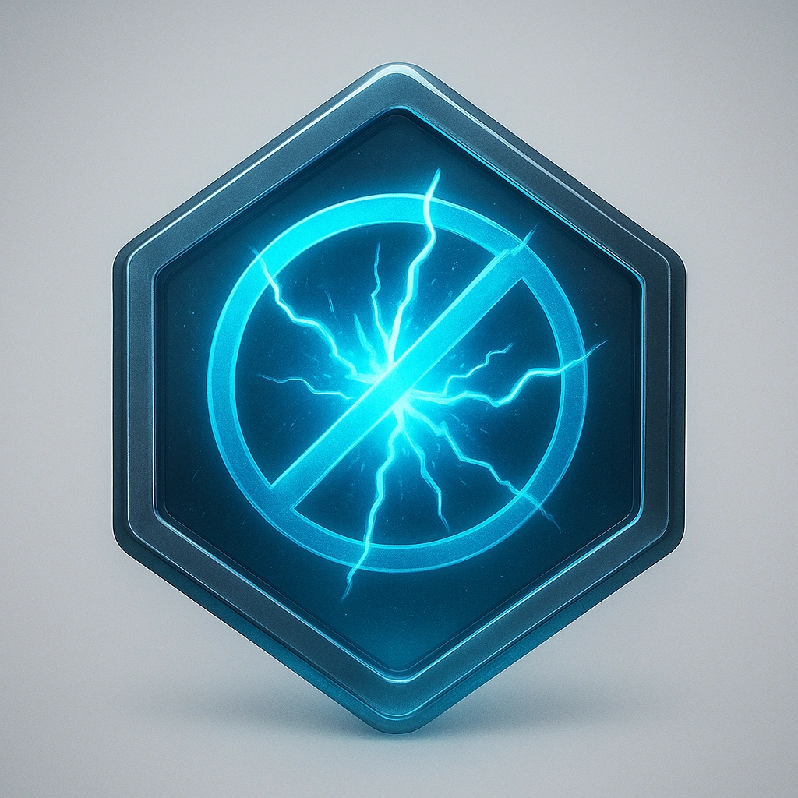

Dampener¶
Description¶
To you, chaos is noise—meaningless vibration that hides the true signal. The Prometheus Cloud shattered the lattice of reality, but you can still sense its intended structure. You hear the hum of stability beneath the static and dedicate yourself to restoring it. Dampeners manipulate the field to filter, balance, and silence uncontrolled probability. They stabilize allies, suppress dangerous phenomena, and bring calm where others only see confusion. But the more control they impose, the more they risk cutting themselves off from the living rhythm of the Resonance itself. Philosophy: Stability is strength. Chaos without form is suffering.
Drive: Contain, heal, and preserve coherence.
Subclass
Features¶

Stabilizing influence — Foundation: Once per long rest, give each ally a Stability die based on your Cybermancy Tier (Tier 1: d4, Tier 2: d6, Tier 3: d8, Tier 4: d10). They may use that Stability die to augment one Reaction check to oppose a magical effect.
Harmonic Reversion — Foundation: Once per scene, as a Reaction, when an ally within Close would Mark 1 Stress, you Mark 1 Stress instead.
Quantum Lattice — Specialization: Spend 1 Hope to impose structure on the immediate area. Choose up to two allies within Very Close – their next action cannot fail, but also cannot critically succeed; a failed roll is treated as Succeed With Fear.
Destructive Interference — Specialization: Once per session, reduce the size of one area of effect.- 
Field collapse — Mastery: Once per scene, cancel one magical effect. Spend 1 Hope per Tier of the originating adversary. 
Stillpoint — Mastery: Spotlight an action to enter a quantum superposition state. While in Stillpoint, you cannot attack or move more than Very Close, but all allies within Very Close gain +2 Evasion and advantage on Reactions to spells, magical effects, and resonance-based effects from the Environment. The state ends if you take damage or choose to release it.